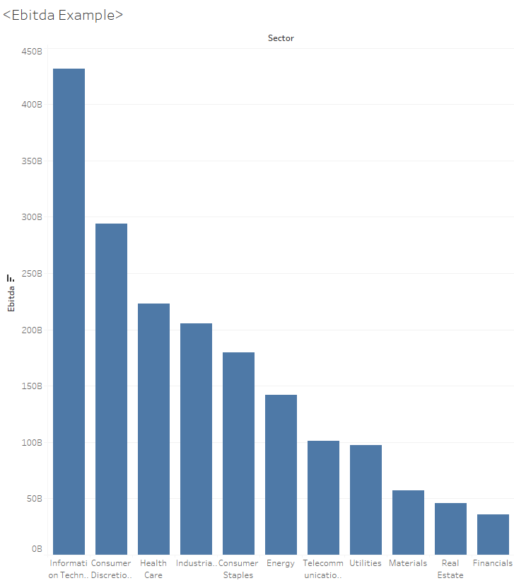
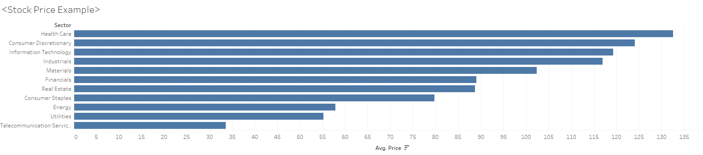

CSE412 Final Project - US Stock Market Analysis
How do we profit from investment into stock markets?
For this analysis we will focus on the COVID-period US stock market using indexes from SP500, which experienced moderate level of fluctuation due to various reasons. In the following context we will provide visualizations for aspects of the markets and give the audience a sense of how to choose a industry of interest and target several companies.
Part 1: Market Health Overview
To create this scrolling segment of the document, we first specify a Scroller component, which can just be done with [Scroller] ... [/Scroller]. The text and visualizations seen here are specified within this component.
The background is that same Tableau map visualization from earlier, but displayed at a larger size.
To set the background, you can use a Graphic component to wrap the TableauEmbed component from earlier.
The contents for these text boxes are described with the Step component, and can even include other components like the visualizations from before!
Take a look in the index.idyll file to see exactly how this works in the code, and keep scrolling for more examples.
Part 2: Insights into industries
In this part we will focus more on the difference of indexes between different industries, use the dataset “financials.csv” to create visualizations and add explanations.
We either explain the variables here or after every visualizations.
Dividend to EPS

Turn this static image into a VegaLite interactive visualization where audience could filter their own interest of industry.
Explain the variables and give insights of typical patterns of the visualization.
Ebitda analysis
Also turn this into VegaLite visulization where audience could pick their favorite company and see the contribution of the company to the whole industry.
Explain the variable Ebitda.
Price by sector
When investing, the price of the stock is also very important which decides how many shares you could buy and determine your return rates:
Also add one interactive bar that audience could search/pick their favorite companies stock price (with its 52 weeks high and low).
Part 3: Company’s seasonal reports
One of the documents to read prior to buying stocks will be the seasonal reports of the target company, where the balance sheet, income statement and their plans will be listed, we could then use them to estimate the profitablity of the company.
We will pick 5-10 technology companies (Apple, Amazon, Tesla, NVIDIA, Airbnb, Uber, ...) to make a dataset, and compare their indexes within 1 year period!
Data cleaning still in progress!!!